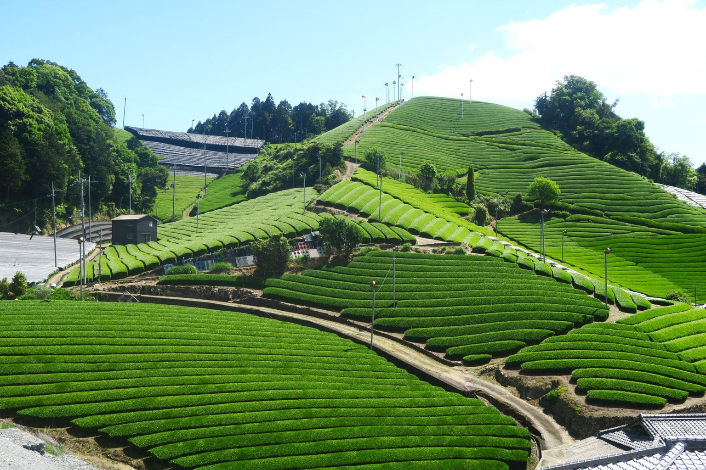
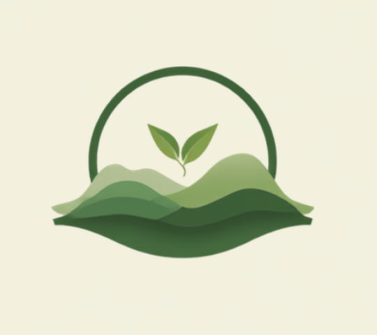

Matcha crossed the world.
$10.8 billion by 2030
Matcha became a lifestyle.
[SOURCE: firm, year]
The boom never reached the people who grow it.
Anywhere in the world, anyone can print the word ‘Uji’ on a tin.

Uji Terroir
We put the grower’s name back on the tea.
Enter the siteUji Terroir · Uji, Kyoto · Market figure: [SOURCE: firm, year]